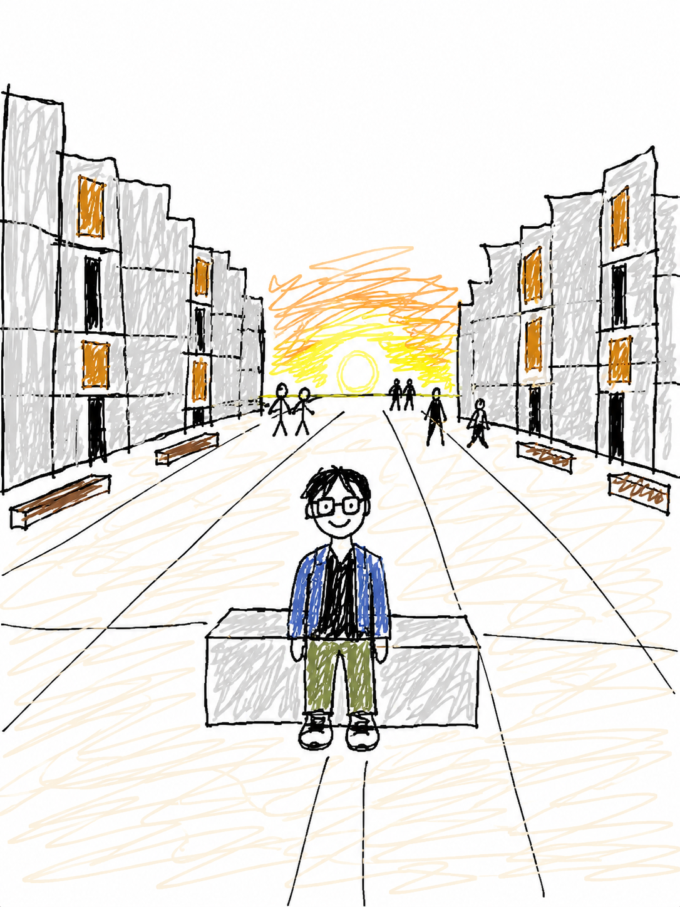
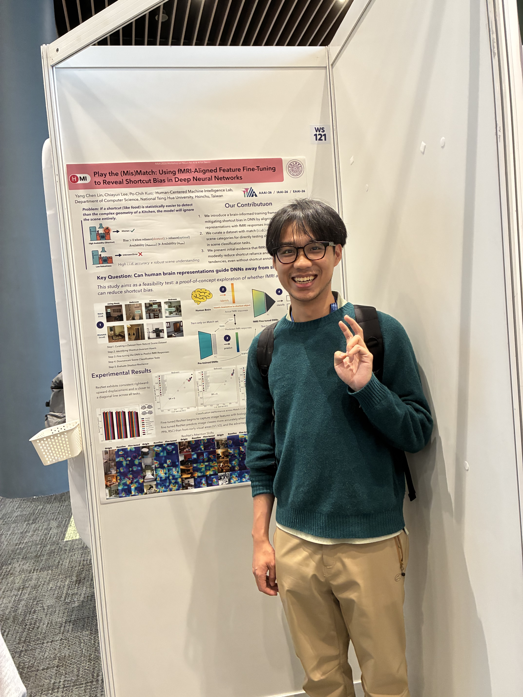

林泱辰Hi, I'm YC, a graduate student (started from 02/2025) from Taiwan at National Tsing Hua University (NTHU), where I work with Dr. Po-Chih Kuo in HMI Lab within the Department of Computer Science.
My research explores the spatial, social, and design cognition of humans and AI in built environments and social landscapes. Grounded in everyday, real-world experiences, my work draws on approaches from human-computer interaction (HCI) and cognitive computational neuroscience (cognitive science/psychology + neuroimaging + machine learning/deep learning).
Currently, I am particularly passionate about two main topics:
(1) exploring how to craft evidence-based design tools that enable humans and AI to co-create architectural experiences during the design process (CHI'25 LBW, CHI'26), and
(2) examining how people navigate their relationships with social issues
In parallel, I am also very interested in fundamental challenges in ML/DL with a NeuroAI (brain-inspired) lens, focusing on shortcut learning (AAAI '26 NeuroAI Workshop) and biologically plausible propagation mechanisms.
More recently, I have been collaborating with Dr. Yi-Chieh (EJ) Lee at the AI4SG Lab, National University of Singapore, and his Ph.D students Yitian Yang and Yugin Tan. Our research examines everyday information-seeking behavior in the era of conversational AI agents, using psychological distance as a framework to understand how situation-dependent information needs shape individuals' preferences and experiences with different search tools (CHI'25) and formats (CHI'26).
Previously, I was fortunate to be mentored by Dr. Chih-Mao Huang at NCTU (now at HKU), where I received foundational training in cognitive neuroscience research and fMRI experiments. My prior research focused on a cross-cultural fMRI study examining moral decision-making during social interactions.
Nice to meet you all! Feel free to reach out! ✉️ I'm always open to deeper conversations and connections — whether to discuss ideas 💬 or explore possible collaborations 🤝